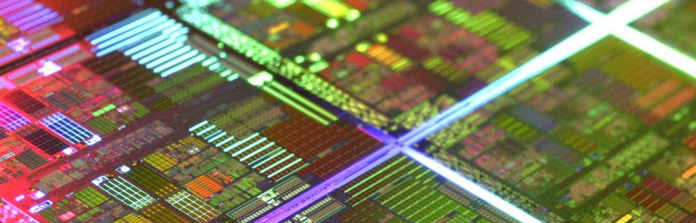

Serviços em Computação
Realização de manutenção e consertos na área de TI

Sistemas Operacionais
Instalação e formatação de sistemas operacionais e softwares

Manutenção em Hardwares
Instalação e manutenção de hardwares
Redes e Internet
Configuração e manutenção em Internet e Intranet